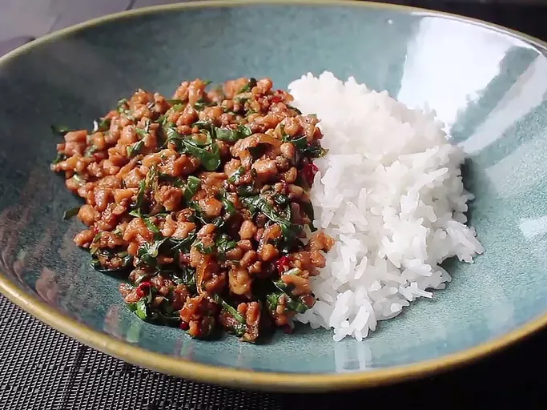

Thai Basil Chicken

Description
Thai basil chicken is a stir-fry dish made with finely chopped or ground chicken cooked with chile peppers, garlic, and shallots, and seasoned with a sweet and salty sauce and finished with fresh basil. It's a classic dish in Thai cuisine and can be found in restaurants and as a popular street food.
Ingredients
1/3 cup chicken broth
1 tablespoon oyster sauce
1 tablespoon soy sauce, or as needed
2 teaspoons fish sauce
1 teaspoon white sugar
1 teaspoon brown sugar
2 tablespoons vegetable oil
1 pound skinless, boneless chicken thighs, coarsely chopped
1/4 cup sliced shallots
4 cloves garlic, minced
2 tablespoons minced Thai chilies, Serrano, or other hot pepper
1 cup very thinly sliced fresh basil leaves
2 cups hot cooked rice